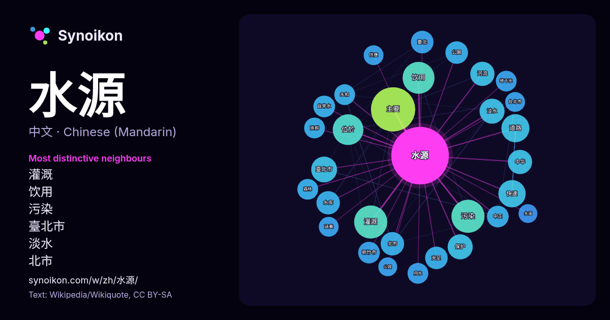

中文 · 热门词
水源
“water source” · 来自维基百科, Wikiquote 910 次出现中其周围的词。

最具特色的邻近词
- 灌溉 27×
- 饮用 26×
- 污染 25×
- 臺北市 16×
- 淡水 16×
- 北市 14×
- 主要 14×
- 快速 14×
- 水库 14×
- 河流 14×
- 充足 13×
- 自來水 13×
- 道路 13×
- 新竹市 13×
- 臺北 12×
- 中正 12×
- 位於 12×
- 地下水 12×
- 用水 12×
- 永和 12×
× = 比维基百科普通文本中多出的倍数。
最常见的邻近词
- 主要 50
- 污染 28
- 灌溉 28
- 饮用 26
- 位於 24
- 重要 22
- 道路 20
- 工程 19
- 快速 19
- 一個 17
- 提供 17
- 臺北市 17
- 保护 16
- 淡水 16
- 中华 15
- 河流 15
- 使用 14
- 北市 14
- 地區 14
- 水库 14
上下文
- 河流源頭是指一條河流或溪流的地理起始點，即地表徑流開始匯聚成流動水道的區域。若某條河流匯集了一條或多條支流，則該河流會擁有多個源頭，這些源頭就是其所有支流的起始點。每個源頭都是河流的水源之一，因為雨水、融雪或泉水的地表徑流會在此處開始積聚，形成持續穩定的水流，最終成為該河流的一級支流。在眾多支流中，從源頭到河口（即注入主幹河流的位置 Wikipedia snippets · 河流源頭
- 水源路是台灣台北市西側沿新店溪右岸興建的一條道路。與其共線的水源快速道路是台北市區主要的快速道路之一，大致呈南北向，北接環河南北快速道路，南接新店環河快速道路，部分路段為高架道路。 （由北至南） 萬華區 中正區 文山區 新店區 臺北市快速道路系統，早於1974年即已訂定，復於1988年修正路網發展計 Wikipedia snippets · 水源路
- 臺北市公有水源市場，簡稱水源市場，位於台灣台北市中正區的水源大樓，1980年落成，2010年重新整修，為公館一帶的指標建築。 水源大樓位於台北市中正區羅斯福路四段，因早期位於水道町（又稱水源地）而得名；現今位於捷運公館站1號出口旁。原水源大樓因建築老舊，冷氣、招牌、管線外露，台北市政府進行整修，並邀請以色列藝術家Yaacov Wikipedia snippets · 水源大樓
- 分，或以北疆和南疆俗称。夏季高温、光照充足以及昼夜温差大的气候特点使得新疆出产各类优质瓜果，如番茄、哈密瓜、石榴、葡萄等。炎热干燥的气候和稳定的灌溉水源使南疆成为中国最大的优质棉花生产基地。新疆也是中国油气资源最丰富的省区之一，储量占陆地总储量近三分之一，拥有亿吨级储量油田。所拥有中国战略油气储备基 Wikipedia snippets · 新疆维吾尔自治区
- 水源市（越南語：Thành phố Thủy Nguyên／城庯水源）是越南海防市下辖的一个市。白藤江穿过市境。市东北角白藤江口即历史上白藤江之战的发生地，为越南国家级遗迹。 水源市东接广宁省广安市社，西接海阳省荆门市社，南接吴权郡和海安郡，西南接鸿庞郡，北接广宁省汪秘市和东潮市。 阮朝时，水源 Wikipedia snippets · 水源市
- 國立臺灣大學思亮館 臺大共設有八棟男生宿舍、九棟女生宿舍、兩棟研究生專用宿舍，以及與太子建設以BOT模式興建的太子學舍臺大長興舍區、太子學舍臺大水源舍區。宿舍分布於校總區、水源校區、城中校區三地。 校慶 臺大官方將中華民國接收改制的日期11月15日做為臺大的校慶紀念日，但建校時間依然以1928年臺北帝大的建立 Wikipedia snippets · 國立臺灣大學
- 新港口，鹿港開始成為台灣中北部的政治、文化、經濟的重鎮，與其他兩大貿易港合稱「一府（臺南）二鹿（鹿港）三艋舺（萬華）」。由於先來後到的土地分配衝突及水源分配而相繼發生分類械鬥，進而影響日後臺灣族群的分佈，在此時，漢人不斷侵佔平埔族土地，迫使平埔族漢化或移往高山，接受山地的原住民的庇護。對於此一現象， Wikipedia snippets · 臺灣
- 水源性蕁麻疹（英語：aquagenic urticaria）也稱為水過敏或是水性蕁麻疹，是一種物理性導致蕁麻疹的形式，患者的皮膚在接觸水之後會出現蕁麻疹（風疹塊），但與水的溫度無關。這種症狀通常是由接觸任何類型、溫度或是含有添加物的水所引起。 水源性蕁麻疹的主要症狀是出現物理性風疹塊，這些風疹塊也不 Wikipedia snippets · 水源性蕁麻疹
更多词
于 2026-10-09 以默认设置预先计算（±5 个词，中等语料）。交互式图可用实时数据刷新。
界面为机器翻译，欢迎指正。